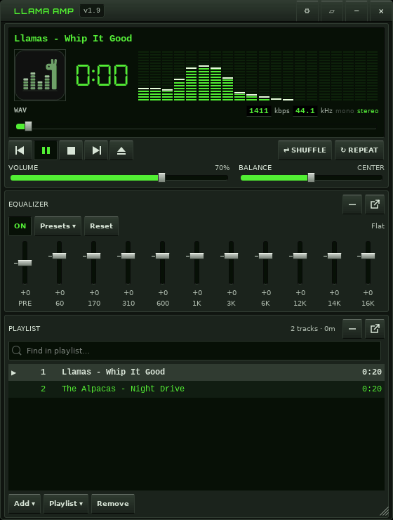
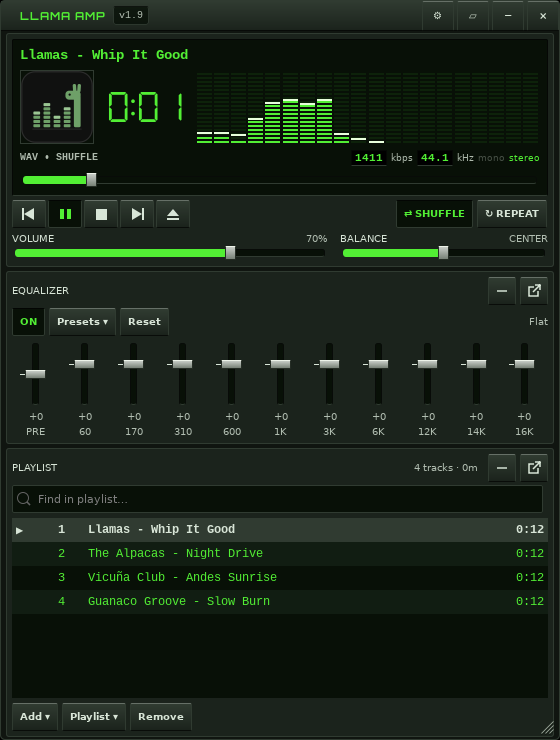
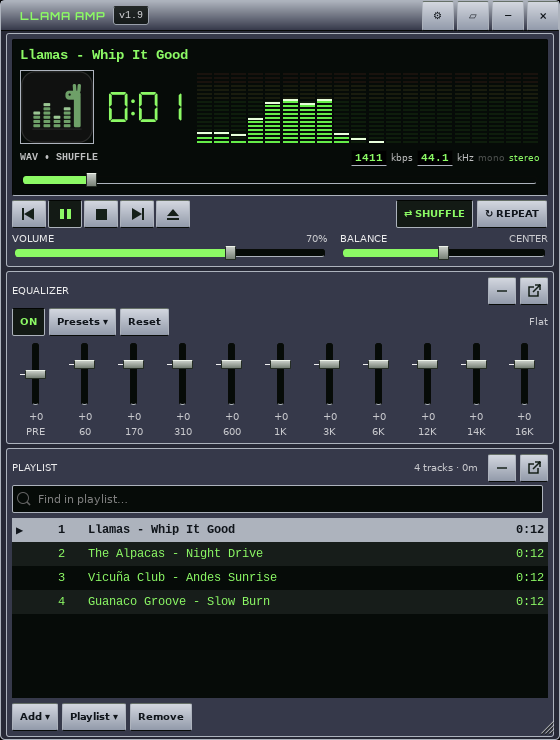
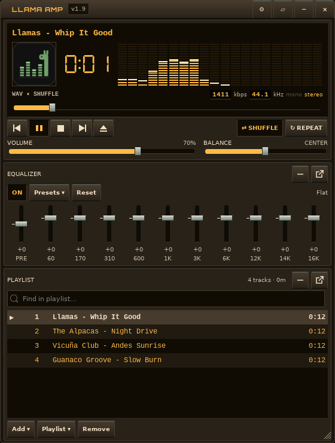
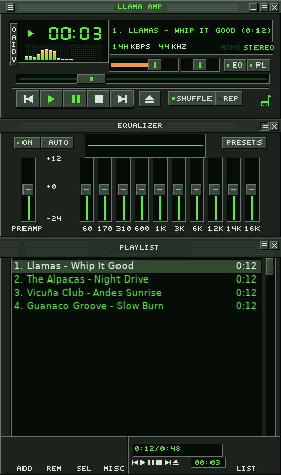
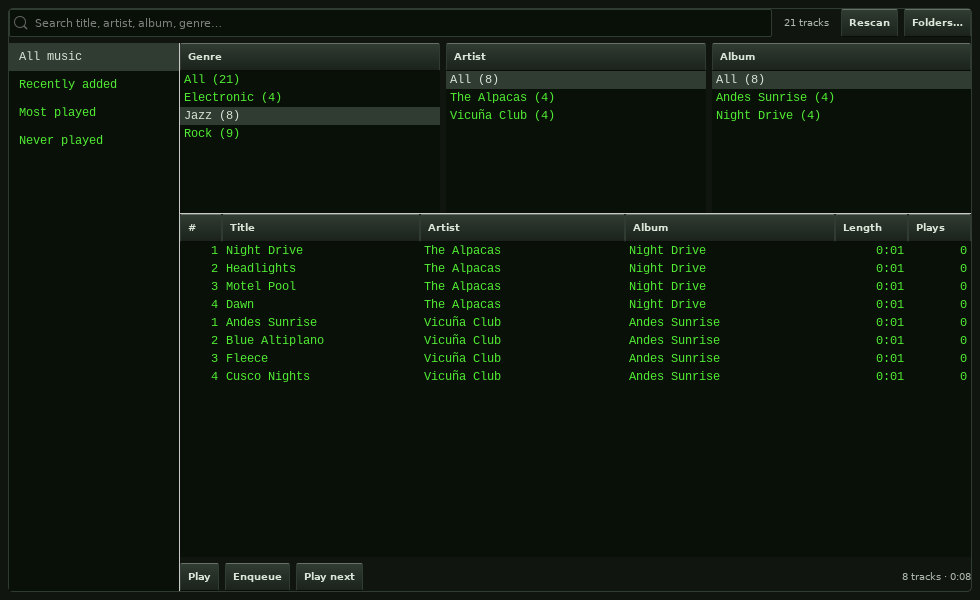
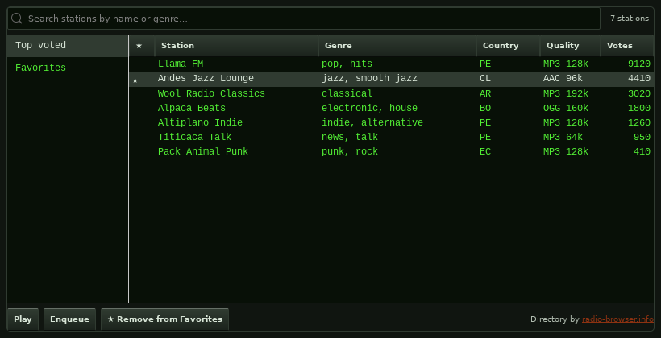

A Winamp-inspired music player with real Winamp 2 skins, gapless and bit-perfect playback, crossfade, a ten-band equalizer and a live spectrum analyzer. Free and open source.

Classic mode draws the main window, equalizer and playlist from any .wsz skin — shaped skins and skin fonts included. Drop a skin on the player to wear it.
Point it at your music folders, then browse by genre, artist and album, search as you type, and revisit what you play most.
Direct Mode keeps the signal untouched, ALSA output skips the desktop mixer, and albums play without gaps.
Two-player, equal-power crossfades of 2–10 seconds when playing through the desktop mixer.
Ten bands with presets, ReplayGain that also levels untagged files, and a spectrum analyzer or oscilloscope — click to switch.
Z X C V B transport keys, jump to file or time, windowshade, and pixel-perfect double size.
Sort, shuffle by album, a Play Next queue, undo for every edit, M3U, and a File Info window.
Browse thousands of stations from radio-browser.info, search by genre, keep favorites, and see live now-playing titles.
Synced lyrics from .lrc files or tags that follow the song, and a tag editor right in File Info.
Media keys and panel controls (MPRIS), tray icon, notifications and ListenBrainz scrobbling.






apt upgrade)curl -fsSL https://jeremyperson.github.io/llama-amp-apt/llama-amp.gpg | sudo tee /usr/share/keyrings/llama-amp.gpg > /dev/null echo "deb [signed-by=/usr/share/keyrings/llama-amp.gpg] https://jeremyperson.github.io/llama-amp-apt stable main" | sudo tee /etc/apt/sources.list.d/llama-amp.list sudo apt update && sudo apt install llama-amp
Download it from the latest release and open it with your software installer.
git clone https://github.com/jeremyperson/llama-amp.git && cd llama-amp python3 musicPlayer.py